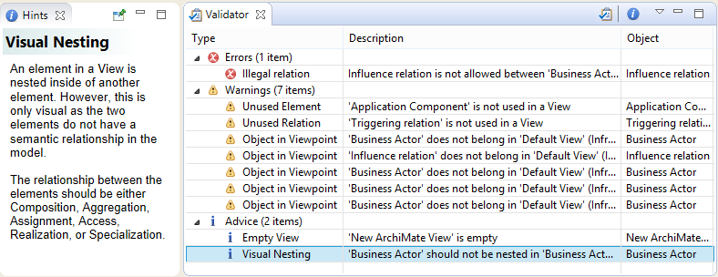
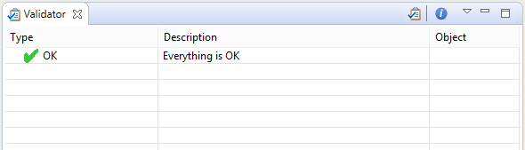

验证器提供有关 ArchiMate 模型完整性的建议和警告。它可以突出以下问题：
验证器窗口可以从主“工具”菜单、主工具栏或主“窗口”菜单打开。
要验证模型，请通过在模型树中选择模型或选择模型的视图之一来确保模型具有焦点。然后从“工具”菜单中选择“验证模型”，或者在模型树中右键单击，或者在验证器窗口本身中选择。
验证器显示提示
双击问题，或在验证器窗口中选择右键菜单项“显示对象”，将在模型树或视图中显示受影响的对象。
要显示有关问题的解释性提示，请确保“提示”窗口已打开，或选择右键单击菜单项“显示解释性提示”。
一旦模型中的所有问题都得到修复，验证器将指示一切正常：
每个验证规则都可以在Preferences中启用或禁用。